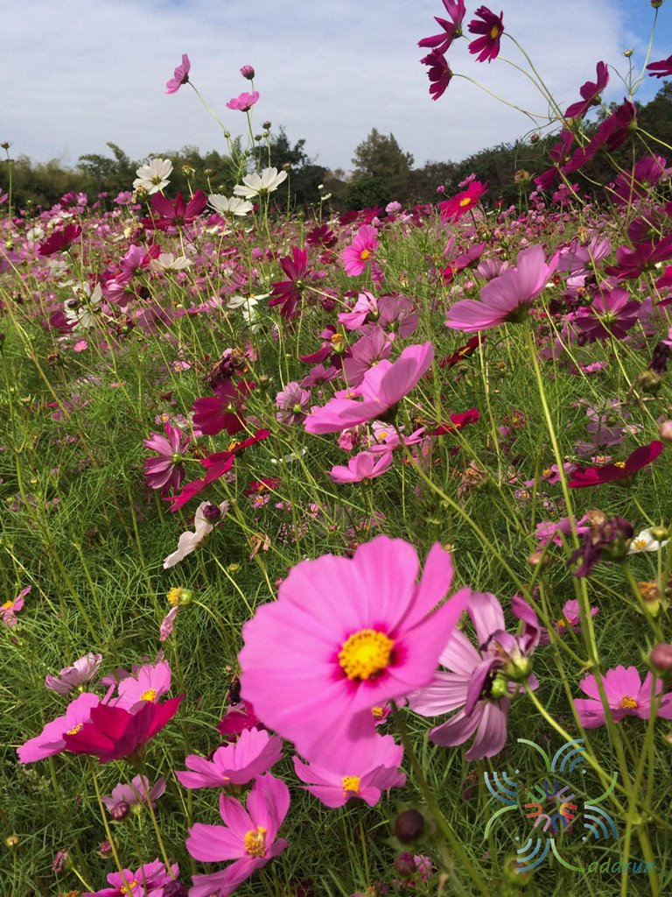
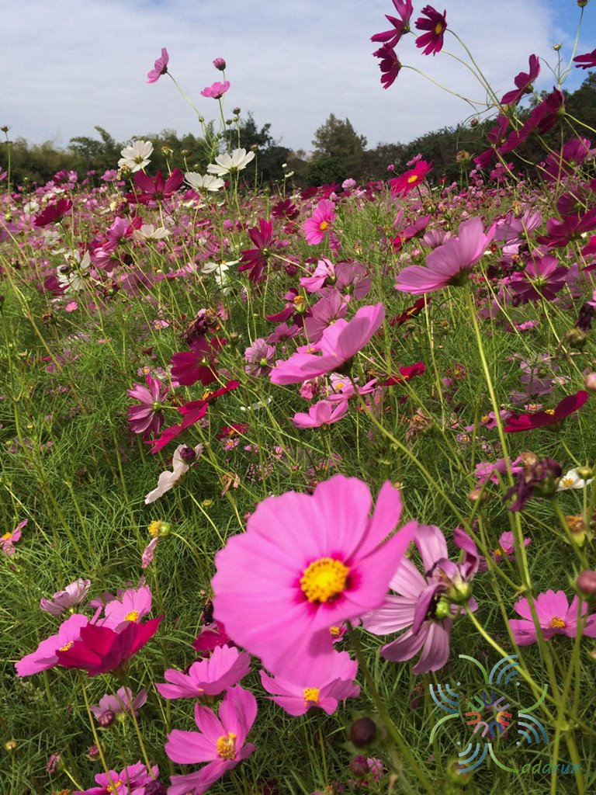
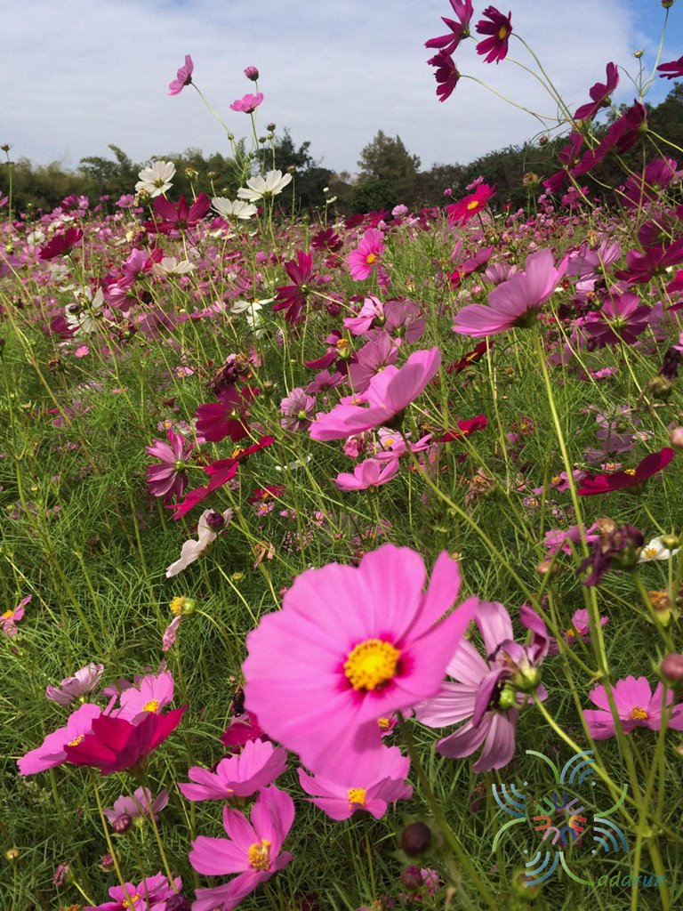
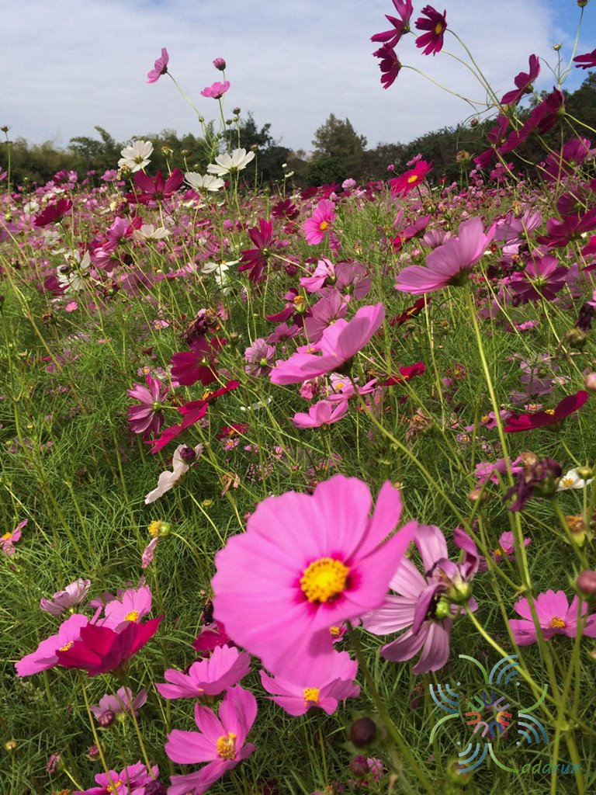

ชื่อทางการ : คอสมอส
ชื่อทางวิทยาศาสตร์ : Cosmos bipinnatus Cav.
สกุล : Cosmos
วงศ์ :Asteraceae
กลุ่มพรรณไม้ : พรรณไม้ดอก
ลักษณะทางพฤกษศาสตร์ : คอสมอสเป็นพืชดอกที่มีลักษณะเป็นพุ่ม สูงประมาณ 0.6-1.2 เมตร มีใบลักษณะขนนก และดอกที่มีกลีบสีสันสดใส เช่น ขาว ชมพู แดง หรือส้ม ดอกคอสมอสมักจะมีลักษณะเป็นดอกเดียวหรือเป็นช่อ
สภาพนิเวศ : คอสมอสเติบโตได้ดีในพื้นที่ที่มีแสงแดดเต็มที่และดินที่ระบายน้ำได้ดี ทนต่อสภาพแห้งแล้งได้ดี แต่ไม่ทนต่อน้ำท่วม
สภาพนิเวศวิทยา :คอสมอสมีความสามารถในการปรับตัวต่อสภาพแวดล้อมที่หลากหลาย เช่น ดินทั่วไปที่ไม่เป็นกรดหรือด่างเกินไป และยังสามารถเติบโตได้ในพื้นที่ที่มีการจัดการบำรุงรักษาน้อย
ถิ่นกำเนิด : ดั้งเดิมในภูมิภาคเม็กซิโกและอเมริกากลาง
การกระจายพันธุ์ : ปัจจุบันมีการปลูกคอสมอสทั่วโลก โดยเฉพาะในพื้นที่เขตร้อนและเขตอบอุ่น
การปลูกและขยายพันธุ์ : คอสมอสสามารถขยายพันธุ์ได้โดยการเพาะเมล็ด เมล็ดสามารถปลูกได้โดยตรงในดิน หรือปลูกในถาดเพาะเมล็ดและย้ายปลูกเมื่อต้นกล้าแข็งแรง
แหล่งอ้างอิง :ข้อมูลเกี่ยวกับคอสมอสสามารถพบได้ในเอกสารพรรณไม้ต่างๆ และแหล่งข้อมูลออนไลน์เกี่ยวกับพรรณไม้ เช่น วิกิพีเดีย หรือเว็บไซต์ที่เกี่ยวข้องกับการทำสวน